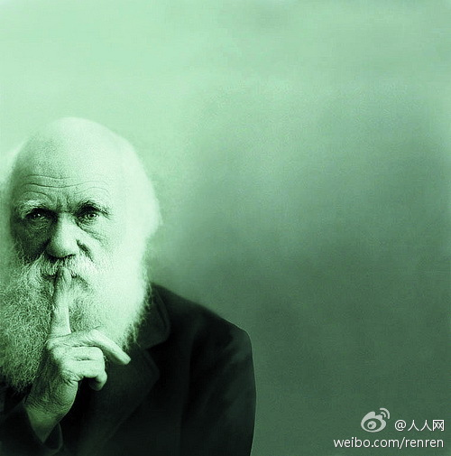

正能量，积极心态是好词，用滥了也很遭人厌。斯德哥尔摩症患者难道不是一种极端的正能量和积极心态？被囚禁被抢劫的人却对作恶者感恩戴德，从心里角度出发，这么做确实比囚徒心里让自己感觉幸福些。但自己幸福就可以了，歪曲事实，试图再游说别人也如此，就是犯罪。
，马上念给老公听。//@闲妻梁母:转发微博@人人网:【#人人热门状态#】这么多年，我从未见过哪个男人跟女生吵架能吵赢的，不是气急败坏地动起了手，就是沉默以对。这仅仅是男人的问题吗？——神回复：达尔文说：“以前也有吵赢的，后来他们都找不到女朋友，于是灭绝了。” 
很多时候是病人的求生欲望很强，即使1%的希望也要尝试。除了病人自己，没人能决定他/她是否继续治疗。放弃治疗，有尊严地离世对自己可以说，但对患病的亲人也这么说就很残忍。//@胖猴信徒赵博:要看看 //@老刀IBM:这篇文章写得很好，推荐大家看看！@波子哥-廖新波:发表了博文 《面对癌症，医生也是无奈！》 - 面对癌症，大多数患者走着这样一条路：先手术，花掉数万元；然后化疗，花掉数十万元；不行再放疗，再花掉数十万元；接着转战中医治疗，花掉数万元，最终人财两空。 网页链接
接下来要灭绝的就是动手的男人了//@Henryhon2k:都别逼我动手啊@人人网:【#人人热门状态#】这么多年，我从未见过哪个男人跟女生吵架能吵赢的，不是气急败坏地动起了手，就是沉默以对。这仅仅是男人的问题吗？——神回复：达尔文说：“以前也有吵赢的，后来他们都找不到女朋友，于是灭绝了。”